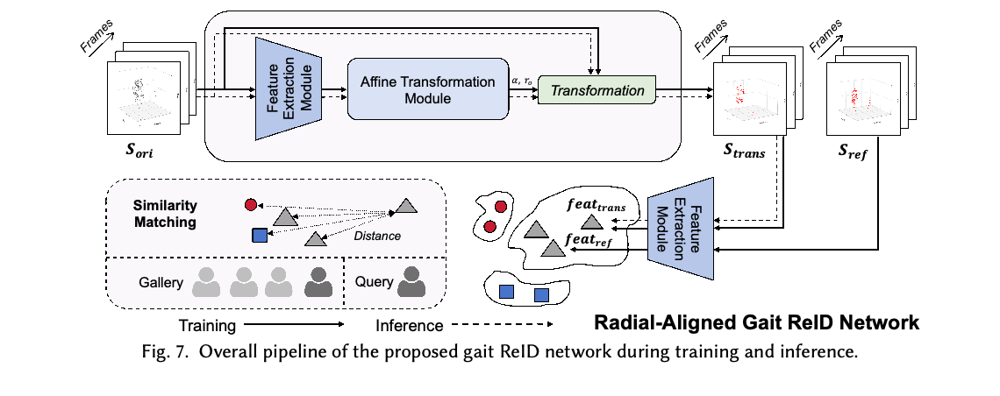
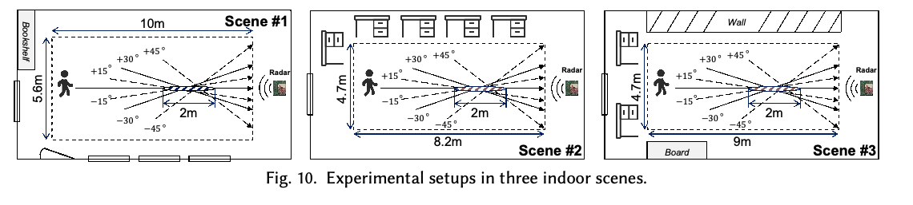
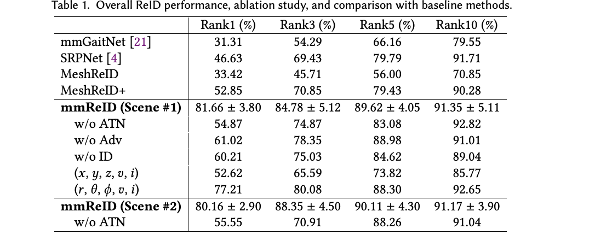

ACM IMWUT 10(3), Article 110, September 2026
IMWUT 2026 · September Issue
Beyond Radial Limits: Recovering Direction-Invariant Walking Dynamics for Robust mmWave Radar Person Re-Identification
Teng Huang, Han Ding, Cui Zhao, Fei Wang, Ge Wang, Jizhong Zhao, Zhi Wang, Wei Xi
mmReID recovers direction-invariant gait features from native polar-domain radar measurements, using learned radial alignment to recognize people walking toward the sensor along different directions.
mmWave Person Re-Identification
Xi'an Jiaotong University
Overview
Millimeter-wave radar can sense gait without relying on lighting or visible clothing appearance. However, the same person's radar signature changes substantially with walking direction: radar measures radial velocity, while noisy angular estimates can distort point-cloud geometry. mmReID addresses these issues by preserving a radar-native polar representation and aligning observations to a common radial reference before matching identities.
Published in Proceedings of the ACM on Interactive, Mobile, Wearable and Ubiquitous Technologies, 10(3), Article 110, September 2026, 30 pages. Corresponding author: Han Ding.
Main Contributions
- Radar-native gait representation. Polar-domain features avoid spreading angular measurement uncertainty across Cartesian dimensions.
- Learned radial alignment. An Affine Transformation Net (ATN) estimates geometric parameters to normalize direction-dependent gait distortion.
- Spatiotemporal gait learning. A Gait Extraction Net (GEN) combines spatial, velocity and intensity cues over a walking sequence.
- Evaluation beyond a single direction. Experiments cover 57 distinct participants, three indoor scenes, unseen walking angles and users, appearance variations, and cross-scene transfer.
Why Walking Direction Matters
Radar directly measures distance and radial velocity, rather than full three-dimensional motion. Non-radial walking changes both the observed spatial distribution and the apparent velocity of body parts. Simply recognizing Cartesian point clouds therefore leaves two difficulties entangled: sensor noise and viewpoint-dependent gait deformation.
mmReID retains five-dimensional observations (range, sin(elevation), sin(azimuth), radial velocity, intensity). Temporal point aggregation and filtering strengthen sparse observations. Direction normalization then seeks to preserve identity-specific walking dynamics while reducing the influence of the path taken relative to the radar.
Network And Inference

| Component | Role |
|---|---|
| Radar-perspective preprocessing | Extracts radar reflections and aggregates temporal observations in polar coordinates |
| Gait Extraction Net | Separately processes spatial and non-spatial cues, then models their temporal relationships |
| Affine Transformation Net | Estimates sequence-level geometric parameters and aligns observations to the radial reference |
| Identity matching | Compares aligned query and gallery embeddings to rank candidate identities |
During training, the model uses radial-reference and non-radial samples from the same individual. The initial gait representation drives transformation estimation; aligned samples are then encoded for identity learning. During inference, both query and gallery observations pass through alignment and feature extraction before similarity matching.
Dataset And Protocol

| Setting | Participants | Purpose |
|---|---|---|
| Scene 1: relatively open environment | 42 | Main evaluation and baseline comparison |
| Scene 2: furnished environment | 21 | Additional evaluation under stronger multipath |
| Scene 3: wall-side environment | 17 | Held-out scene for cross-environment evaluation |
There are 57 unique participants, with overlap between scenes; the scene counts should not be added as independent subjects. Collection totals approximately 7.7 hours. Input clips contain 90 frames, about 4.5 seconds. Tests include coats, backpacks and carried objects, with these appearance variations assigned to the test set in the overall evaluation.
Main Results

| Method / setting | Rank-1 | Rank-3 | Rank-5 |
|---|---|---|---|
| mmGaitNet, Scene 1 | 31.31% | 54.29% | 66.16% |
| SRPNet, Scene 1 | 46.63% | 69.43% | 79.79% |
| MeshReID+, Scene 1 | 52.85% | 70.85% | 79.43% |
| mmReID, Scene 1 | 81.66% ± 3.80 | 84.78% ± 5.12 | 89.62% ± 4.05 |
| mmReID without ATN, Scene 1 | 54.87% | 74.87% | 83.08% |
| mmReID, Scene 2 | 80.16% ± 2.90 | 88.35% ± 4.50 | 90.11% ± 4.30 |
Rank-k measures whether the correct identity appears among the top k retrieved candidates. The reported variability for the full model is the standard deviation over repeated evaluations. Removing alignment or replacing the polar representation with Cartesian inputs substantially reduces Rank-1 accuracy, supporting both central design choices.
Generalization And Deployment
- Unseen angles: Rank-1 accuracies of 68.93%, 65.95% and 68.53% for held-out angle groups of ±15, ±30 and ±45 degrees on the 42-subject dataset.
- Unseen users: 74.43% Rank-1 accuracy when evaluating 12 unseen users.
- Unseen scene: 52.95% Rank-1 accuracy in the standard cross-scene setting; adding one radial gallery sample per overlapping person from the target scene raises it to 69.73%. This is gallery augmentation, not the same protocol as the unadapted result.
- Processing time: approximately 0.139 seconds for network inference and 0.189 seconds for processing after acquisition on the reported Xeon / RTX 3090 platform. The 4.5-second signal collection window is additional.
Scope And Limitations
The strongest results concern indoor walking sequences with approximately stable directions. Cross-scene transfer remains harder than within-scene recognition. Experiments with synthesized non-straight trajectories support segment-wise processing, but fully unconstrained paths, pauses and complex interactions remain future deployment challenges. The 84.62-million-parameter network and GPU timing do not by themselves establish low-power edge deployment. Although radar avoids identifiable camera imagery, gait-based identity matching still requires appropriate consent and data protection.
Resources
- Official ACM publication
- Figures and the table above are extracted from the published paper, licensed under CC BY 4.0.
Citation
@article{huang2026beyond,
title = {Beyond Radial Limits: Recovering Direction-Invariant Walking Dynamics for Robust mmWave Radar Person Re-Identification},
author = {Huang, Teng and Ding, Han and Zhao, Cui and Wang, Fei and Wang, Ge and Zhao, Jizhong and Wang, Zhi and Xi, Wei},
journal = {Proceedings of the ACM on Interactive, Mobile, Wearable and Ubiquitous Technologies},
volume = {10},
number = {3},
articleno = {110},
numpages = {30},
year = {2026},
month = sep,
doi = {10.1145/3831953},
publisher = {ACM}
}